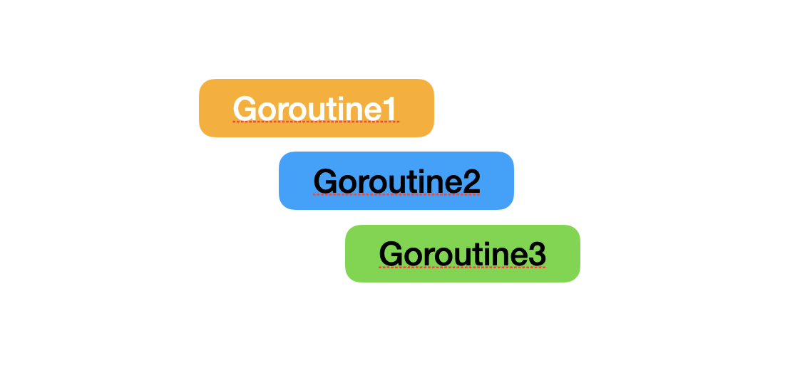
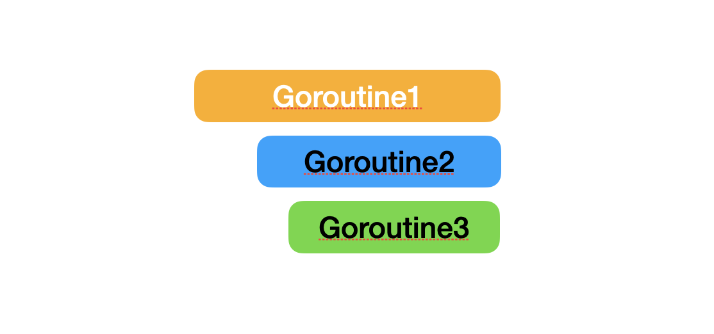

Context 详解
Go 中有一个 Context 接口，配合 goroutine 使用，主要是用来协调 goroutine 的执行，但是比较难理解，这篇文章中来详细分析一下。
1. Context 是什么
在 Go 1.7 版本，引入了一个接口 context.Context。 Context 从字面意思来看，就是上下文的意思，可以理解为它就是某个请求的上下文。
它主要的作用是在 Go 进程中传递信号。这里需要注意，虽然也可以传递参数，但主要传递信号，Context 不推荐用来传递大量的参数。
Context 接口有四个方法：
type Context interface {
Deadline() (deadline time.Time, ok bool)
Done() <-chan struct{}
Err() error
Value(key interface{}) interface{}
}
这四个方法看起来有点抽象：
- Deadline：这个方法返回 Context 被取消的时间，也就是 Context 生命周期结束的时间
- Done：返回一个 channel，这个 channel 会在 Context 生命周期结束之后被关闭，多次调用 Done 返回的是同一个 channel
- Err：返回 Context 结束的原因，这里只会在 Done 方法返回的 channel 关闭之后才返回非空的值
- Value：从 Context 中获取对应 Key 的值，这里面最好放入不可变的值，因为 Context 会在多个 goroutine 中传递，如果值是经常变化的话，有可能会带来意外的结果
2. 为什么需要 Context
以服务端为例，服务端在接收一个请求之后，就需要启动新的 goroutine 来处理这个请求，有可能会启动多个 goroutine。
多个 goroutine 启动之后，很难再去协调这些 goroutine，比如这个请求结束或者被终止，在这样的情况下，所有相关的 gouroutine 都应该被终止。
下面是一个简单的 http 服务，访问 [http://localhost:8080/index](http://localhost:8080/index) 之后，请求很快就返回了，正常情况下，在代码中启动的 goroutine 都应该结束，但是实际上，里面的 goroutine 还是会执行，最后会打印 "goroutine2 invoke"。
http.HandleFunc("/index", func(writer http.ResponseWriter, request *http.Request) {
go func() {
fmt.Println("goroutine1 invoke")
go func() {
select {
// 模拟费时操作
case <- time.After(2 * time.Second):
fmt.Println("goroutine2 invoke")
}
}()
}()
writer.Write([]byte("index"))
})
fmt.Println("server starting")
http.ListenAndServe(":8080", nil)
但这种情况不是我们希望看到的，理想的情况下一个请求的结束，那么这个请求启动的 goroutine 都应该结束。这里就需要通过 Context 来做到。
3. Context 能做什么
可以使用 Context 来解决上面的问题，简单来说就是通过 Context 来串联所有的 goroutine，所有的goroutine 根据 Context 的状态来决定是否还要继续执行。
在一个请求中，不使用 Context，执行的状态是这样的：

在使用 Context 之后，执行的状态是这样的：

3.1 创建一个 Context
在使用 goroutine 之前，需要先创建 Context，Go 提供了两种创建 Context 的方法，使用 context.Background() 或者 context.ToDo() 方法：
func Background() Context {
return background
}
func TODO() Context {
return todo
}
这两个方法生成的 Context 其实都是 emptyCtx，这是一个 Context 接口的空实现：
type emptyCtx int
func (*emptyCtx) Deadline() (deadline time.Time, ok bool) {
return
}
func (*emptyCtx) Done() <-chan struct{} {
return nil
}
func (*emptyCtx) Err() error {
return nil
}
func (*emptyCtx) Value(key interface{}) interface{} {
return nil
}
在功能的角度，context.Background 和 context.Todo 没有区别，只是用来表达不同的用途，Background 表示是最顶层的 Context，其他的 Context 都应该由 Background 衍生而来，关于衍生的概念我们下面会讲到。而 Todo 用于还不确定定使用哪个 Context。
通常，如果没有通过参数接收到 Context，我们就会使用 Background 作为初始的 Context 向后传递。
3.2 衍生 Context
通过上面的 Background 创建的 Context 实际上是一个空实现，无法用来执行具体的逻辑。那么就需要根据具体的场景，衍生出相应的 Context。
每个衍生出来的 Context 都和父 Context 的状态保持一致，如果一个 Context 状态变化，那么通过这个 Context 衍生出来的所有 Context 都会改变。
衍生 Context 可以通过 4 个方法来完成：
- WithCancel
- WithTimeout
- WithDeadline
- WithValue
使用 WithCancel 来衍生新的 Context:
background := context.Background()
child1, cancelFunc := context.WithCancel(background)
go func() {
// 继续衍生 Context
child2, _ := context.WithCancel(child1)
// 继续衍生 Context
child3, _ := context.WithCancel(child2)
select {
// 接收到取消信号
case <- child3.Done():
fmt.Println("context canceled")
}
}()
// 调用取消方法
cancelFunc()
time.Sleep(1 * time.Second)
使用 WithTimeout 来衍生新的 Context:
background := context.Background()
child1, _ := context.WithTimeout(background, 3 * time.Second)
go func() {
// 继续衍生 Context
child2, _ := context.WithCancel(child1)
// 继续衍生 Context
child3, _ := context.WithCancel(child2)
// context 超时的时间
timeout, _ := child3.Deadline()
fmt.Printf("timeout is %+v\n", timeout)
select {
// 接收到超时
case <- child3.Done():
fmt.Println("context timeout")
}
}()
time.Sleep(5 * time.Second)
使用 WithDeadline 来衍生新的 Context:
background := context.Background()
child1, _ := context.WithDeadline(background, <-time.After(3 * time.Second))
go func() {
// 继续衍生 Context
child2, _ := context.WithCancel(child1)
// 继续衍生 Context
child3, _ := context.WithCancel(child2)
// context 超时的时间
timeout, _ := child3.Deadline()
fmt.Printf("timeout is %+v\n", timeout)
select {
// 接收到超时
case <- child3.Done():
fmt.Println("context timeout")
}
}()
time.Sleep(5 * time.Second)
还有最后一个方法比较特殊，WithValue 在衍生 Context 的同时，可以放入键值对:
background := context.Background()
child1 := context.WithValue(background, "ray","jun")
go func() {
v := child1.Value("ray")
fmt.Printf("values is %+v\n", v)
}()
time.Sleep(5 * time.Second)
通过上面的代码可以看到，只要一个 Context 取消，或者设置了超时之后，后面衍生出来的所有 Context 都可以获取到这个状态，Context 是线程安全的，可以在多个 goroutine 之间使用。
上面的 http 服务可以使用 Context 来结束内部的 goroutine 执行，每个 request 中都有一个 Context，可以直接使用：
http.HandleFunc("/index", func(writer http.ResponseWriter, request *http.Request) {
c := request.Context()
cancelContext, cancelFunc := context.WithCancel(c)
defer cancelFunc()
go func() {
fmt.Println("index goroutine1")
go func() {
select {
case <-cancelContext.Done():
fmt.Println("request is done")
return
case <- time.After(2 * time.Second):
fmt.Println("goroutine is invoke")
}
}()
}()
writer.Write([]byte("index"))
})
fmt.Println("server starting")
http.ListenAndServe(":8080", nil)
请求结束之后，里面的 goroutine 就不会继续执行。
4. Context 内部实现
下面来看一下，Context 是如果实现的，使用 Background 生成的 Context 是一个空实现。而且 Background 生成的 Context 无法被取消，也不会过期。
通常在都会使用 With 系列方法来衍生 Context 来使用，下面就来看一下几个 With 方法的实现，四个方法的实现都差不多，这里我们以 WithCancel 方法为例：
func WithCancel(parent Context) (ctx Context, cancel CancelFunc) {
c := newCancelCtx(parent)
propagateCancel(parent, &c)
return &c, func() { c.cancel(true, Canceled) }
}
进入到方法之后，首先会生成一个新的 cancelCtx，这是一个内部的结构体，另外 WithDeadline 会创建一个 timerCtx，WithTimeout 会直接调用 WithDeadline，WithValue 则会创建一个 valueCtx。
type cancelCtx struct {
Context // 保存父 Context
mu sync.Mutex // 这个锁用来保证下面变量的方式是安全的
done chan struct{} // 用来表示 Context 是否结束
children map[canceler]struct{} // 保存衍生的 Context
err error // Context 结束时的错误信息
}
然后会调用 propagateCancel 方法来构建子 Context 和父 Context 的关系：
func propagateCancel(parent Context, child canceler) {
done := parent.Done()
if done == nil {
return // 空的 Context 无法被取消
}
select {
case <-done:
// 这里表示父 Context 已经结束，直接返回错误
child.cancel(false, parent.Err())
return
default:
}
// 这里找出父 Context 是可取消的 Context
if p, ok := parentCancelCtx(parent); ok {
p.mu.Lock()
if p.err != nil {
// 如果父 Context 已经结束，这里直接结束
child.cancel(false, p.err)
} else {
// 否则就把这个当前的这个 Context 加入到 map 中
if p.children == nil {
p.children = make(map[canceler]struct{})
}
p.children[child] = struct{}{}
}
p.mu.Unlock()
} else {
// 如果父类型不是可取消的类型，直接启动一个新的 goroutine 来监听父 Context 是否结束，以及监听当前 Context 是否已经结束
atomic.AddInt32(&goroutines, +1)
go func() {
select {
case <-parent.Done():
child.cancel(false, parent.Err())
case <-child.Done():
}
}()
}
}
- 当父 Context 是不可取消的类型，直接返回，否则检查父 Context 是否已经结束，如果结束，直接返回错误信息
- 然后找出父 Context 中是否有 Cancel 类型的 Context：
- 如果有，且被取消，当前 Context 会直接被取消
- 如果没有被取消，那么当前 Context 会被直接添加到父 Context 的 map 中
- 当父 Context 中没有可取消的 Context 时，直接监听父 Context 的状态，当父 Context 关闭时，直接取消当前的 Context
与父 Context 建立联系后，会返回 Context 和一个 cancel 方法：
func (c *cancelCtx) cancel(removeFromParent bool, err error) {
if err == nil {
panic("context: internal error: missing cancel error")
}
c.mu.Lock()
if c.err != nil {
c.mu.Unlock()
return
}
c.err = err
if c.done == nil {
c.done = closedchan
} else {
close(c.done)
}
for child := range c.children {
child.cancel(false, err)
}
c.children = nil
c.mu.Unlock()
if removeFromParent {
removeChild(c.Context, c)
}
}
当在代码中主动调用 cancel 方法时，会关闭 Done 通道，同时会把由当前 Conetx 衍生出来的可取消的 Context 都关闭，同时将这个 Context 从父 Context 中移除。
5. 小结
Context 提供了一种协调多个 goroutine 的运行，可以在多个 goroutine 之间安全的传递，让那些没必要执行 goroutine 尽快停止，释放系统资源。Context 主要用来传递信号，虽然也提供了传递值的方法，但不推荐使用这个方法来传递大量的数据，通常只用来传递简单不可变的数据，比如用户的认证 token 和请求的 traceId。
文 / Rayjun